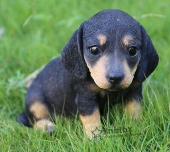

개의 어린 형태를 일컫는 순우리말이다. 소의 새끼 → 송아지, 말 → 망아지의 어법을 따라 만들어진 용어다. 돌, 돝 + 아지 → 도야지 → 돼지도 있다. 영어로는 Puppy 혹은 Doggy라고 한다. 일본어로는 왕짱(ワンちゃん)으로 한국과 비슷하다. 한국의 멍멍을 일본어로는 왕왕(ワンワン)으로 표기하기 때문이다. 개[kahj][2] + 작다는 뜻의 접두어 앚[3] + 명사전성어미 "이"가 합쳐져서 강아지가 됐다. 아지는 옛날에 아기를 다르게 부르는 말이다. 지방, 지역마다 조금씩 다르게 부르기도 한다. 강아지를 줄여 강쥐라고 부르는 경우도 존재한다.
